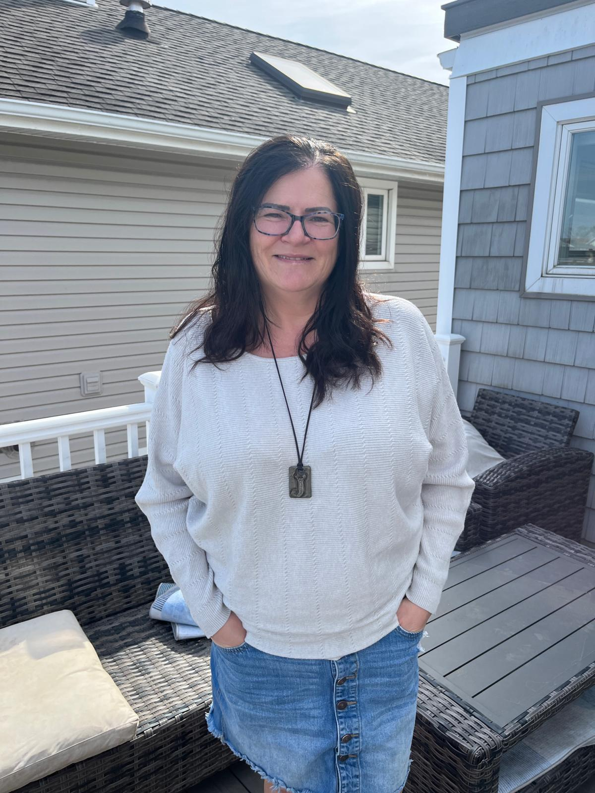
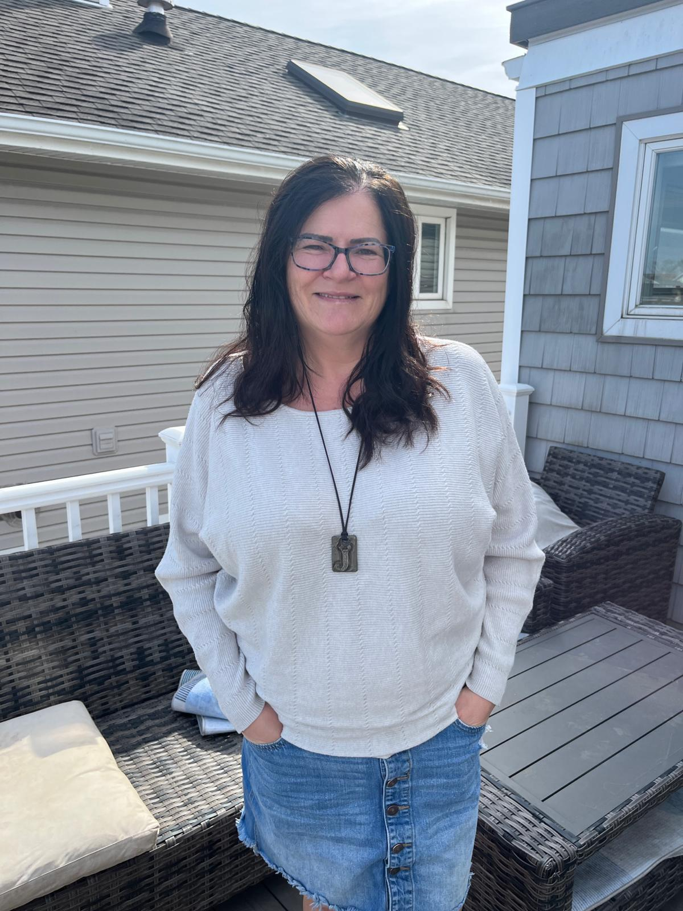
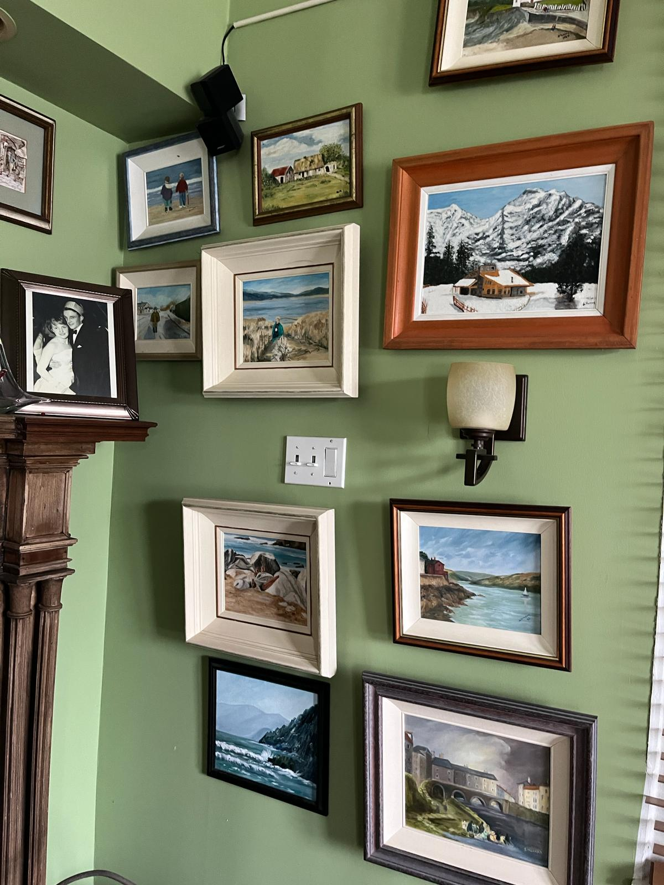
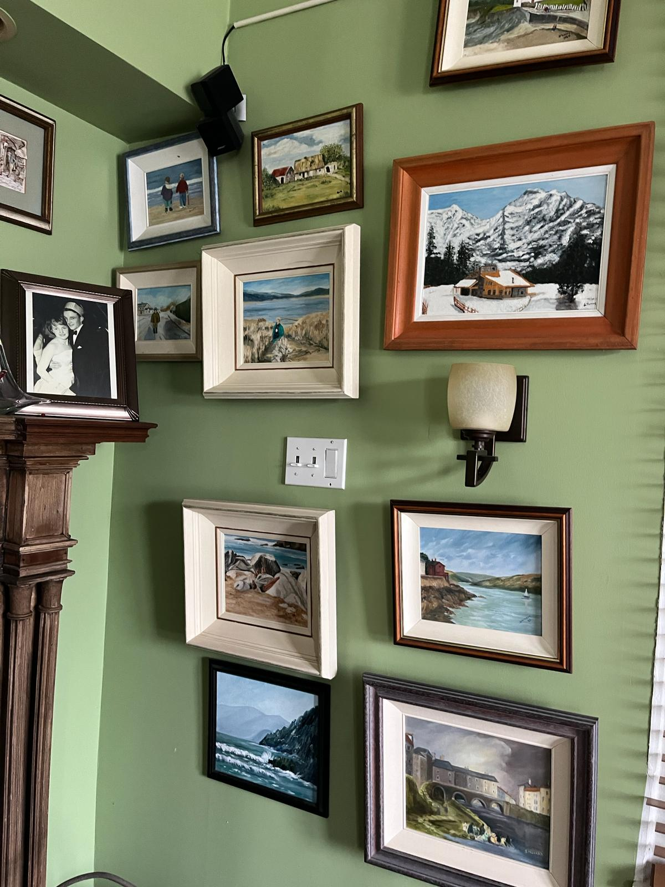

An Irish Enclave
An Irish Enclave, A Prosperous Irish Community on LI, NY
Long Beach considers itself to be an Irish town. With more than 20% of residents reporting to have Irish ancestry, the people of Long Beach aren’t just Irish for St. Patrick's day, but all year round.
Every October, the city celebrates St. Brendan the Navigator Irish Heritage Parade and Festival, or more commonly, Irish Day, hosted by the local Ancient Order of Hibernians. For St. Patricks day, the West End neighborhood is decked out in green shirts and three leaf clovers as locals and party-goers celebrate. Some of the residents who moved to the small town off of Long Island gather in bars to share stories of growing up in their home country.
Many of them moved to New York seeking out job opportunities that weren’t available due to a suffering economy in Ireland during the Troubles. During this period of significant conflict in the country, the Morrison and Donnelly Visa programs were introduced by two Irish American Congressman. Irish immigrants who were granted visas through these programs moved to the US to find work and opportunity. After settling in country and gaining citizenship, many moved from large Irish communities in the city to smaller enclaves throughout Long Island. Long Beach is one example of these bright and vibrant communities of Irish in America, who somewhere along the way have become Irish Americans.
At Mary’s Irish Shop in the West End, the table cloths are checkered white and Irish Green and customers sip Barry’s tea from china teapots covered in three leaf clovers. They offer a range of authentic Irish delicacies, from handmade chicken pot pies to a full Irish Breakfast, which includes eggs, Irish bacon, Irish sausage, fried tomato, black & white pudding, beans and toast.
Mary’s imports goods and ingredients from Ireland to their small shop providing locals and the Irish community a taste of home. I sat down with the owner of Mary’s Irish Shop, Patricia McCormac, to enjoy some Irish tea and apple cinnamon scones while discussing her life, her store, and its role as a pillar of the local Irish community.
What inspired you to move here?
“Oh, I left Ireland and came here 36 years ago. I'm one of 11 and everybody was just getting married, having kids and I thought, I don't want to do that. So I left, went to London for a couple of years, then I came here, done a bit of traveling, came back. Then we ended up living back in Ireland for 12 years. My daughter loved it, so she's like, ‘Mommy, do we have to go back?’ My husband and I decided we would stay in Ireland. Kathleen and I came back in 2019 after he passed.”
How did you end up in this shop?
“Pure fluke, absolute fluke.”
Five years ago, when McCormac and her family returned to Long Beach, a friend recommended McCormac’s daughter Kathleen for a job at Mary’s. Her daughter decided to work elsewhere, so she came to the cafe to inform them. “I get chit chatting to the guy. And he's like, ‘What are you doing tomorrow?’ I goes, ‘I have no plans.’ ‘Why don't you come in and talk to me?’ And I've been here since.”
The original owners, Mary and Gerry opened the store in 2016 before selling in 2019. The new owner handed the keys over to McCormac a few months later. “I love it, love the people that come in. You know, it's just a lovely wee place to work.”
What role does this store play in our local community and the Irish community?
“Well, firstly, everything in the store is imported from Ireland. So the Irish people who are used to their stuff but can't get it anywhere else—there's nowhere really else around here—so for that, people are getting their taste of home. Then I have my menu, like you have a full Irish breakfast, the bacon, the beans, it all comes from Ireland.”
“There's one lady, she comes in like every six weeks, she'll spend $300 and change. I'll be having a heart attack when I'm ringing up the till for her. She buys at least 10 packets of fig roll biscuits, and one day she goes, ‘I eat these myself.’ Jesus Christ.”
So would you say the store has been successful since you've been here?
“Yes. I have been very lucky. I’d say I’ve tripled my business from when I took over. I started what they weren't doing before, like I make my own scones and they were buying them. I make me own shepherd's pies, chicken pies, beef stews, and homemade bread.”
“I get my flour from Ireland, I tried the American flour and they came out nowhere near as good. It cost me probably four times the price but I imported it from home, along with the porridges and stuff, that makes a big difference.”
Do you think there's a difference between being Irish in America versus being Irish American?
“I find a lot of the like, Irish Americans, more Irish than we are. More into St. Patrick's Day. Being from Northern Ireland we didn't really celebrate St. Patrick's Day because we were the north. So there was no flag, No Irish flags up or any of that stuff. I think of it every single day when I put my flags out, truthfully, when I put up my Irish flag and my American flag every morning. I think, at home we never could fly our flag in Ireland, not in the north of Ireland.”
 

Julia “Jools” Corrigan moved to the US from County Tyrone, Northern Ireland, 29 years ago. After graduating university and accepting a Morrison visa, Jools and her boyfriend landed at JFK on July 4th, 1994. “[It’s] a very bad day to come to America. Everything's closed, we had nowhere to stay or anything.” said Corrigan. With $200 in her pocket, they asked their taxi driver to bring them to a hotel. “We stayed in some random motel up in the Bronx. The next day, we went to the first Irish bar we could find, asked if anyone knew of any accommodation and decided to stay. From the very first day we came to this country, we went straight to an Irish establishment to ask for help.”
She moved to Long Beach in 2005 for a rental before deciding to buy the home a year later. Now a citizen of the United States, Jools is a stay-at-home mom to twin 11 year olds, Brooke and Aran, who attend the local middle school.
Can you tell me about your life growing up?
“I was born in 1968, which is the year that the troubles started in Northern Ireland. It was a very contentious time in Northern Irish history, but I had a great childhood. There's five kids, three girls, and two boys. My mom and dad both worked outside of the home. My dad started a crystal company called Tyrone Crystal, and he was also the editor of a local newspaper. My mom worked in a government office, and it's unusual for the moms to work outside the home. When she first got married, she wasn't allowed to work outside the home, that's how long ago it was. And then as soon as that dissolved, she went and got herself a job. She was very proud of herself.”
How would you describe your life in Long Beach?
“Idyllic. What's not to love about having the beach right here, the ocean. The winters are a little tough, but you can still go and walk on the beach. We love that Long Beach is a city, but it's not huge, especially for bringing the children up. We love that there's a sense of community here in Long Beach. You can reach out, and if you don't know the person you're reaching out to, then somebody you know knows them. So there's that sense of community, even though we didn't grow up here. And also, we love the fact that there’s a growing population of Irish people here. I don't know all the Irish people, but I know a lot of them. We do tend to find each other.”
Can you explain some of the similarities and differences you've seen living here and growing up in Ireland?
“It's like chalk and cheese, it's so different. The way of life here is, like, we spend a lot more time outdoors and socializing. Whereas at home in Ireland, with the weather conditions and everything, you just stay with your family a lot. And then the fact that I don't have any family here in Long Beach, your friends become your family. So we do tend to reach out to each other. he American way of life is so much different than the Irish way of life.”
How would you describe the local Irish community?
“We're very involved with each other and yet, everybody hastheir own lives. As many Irish people as I know, even though they're separate little groups and entities, we do try and get together as often as we can because of that camaraderie. We've all left our families at home, so we do tend to seek each other out so we can get that familiarity. Then we go about our own lives. Most of my friends are Americans, but I do know most people in the Irish community. I love to meet new people, and even though the Irish people would have been new people, there's that familiarity you still have from growing up in the same country. There's only one other girl I met here in Long Beach that's from the same part of Ireland I'm from, but most of us are from all different areas.”
Do you think there's a difference between being Irish in America versus being Irish American?
“Yes, this is something I'm gonna have to deal with, with my children because they are now Irish American. I'm an Irish person in America. There's definitely a difference, because the way you grew up, it colors your whole view of the world. My view of the world is so different because of where I grew up, especially in the troubles, than their view will be. I was exposed to war at a very young age, I was exposed to warring factions, and the impact religion had on people who should be getting along but aren't. So my view of the world is going to be very different from their view. I would assume theirs is going to have a much rosier hue, because they haven't had, really, to deal with things like that. The pandemic will have affected them more deeply than it affected me. Because I feel like I was very resilient as a youngster, growing up in the environment I grew up in. So I think where you grow up really affects your outlook on life it really, really does. I hope that they have a great life in America because it has afforded me a great life in the 30 years I've been here. I just hope it continues for them and things don't change too much. Because the world is changing as we know it.”
 

Every morning, Michelle Fitzpatrick turns on RTE News as she gets ready for the day. Using a satellite, she tries to stay informed on news and entertainment from home. Despite having spent more than half her life outside Ireland, Fitzpatrick is still glued to the TV this morning. Leo Varadkar, the Republic’s Taoiseach, or prime minister, suddenly resigned earlier in the day and the public awaits a formal address. Sipping a cup of tea from her couch, Fitzpatrick texts her daughter Willow, who’s in Paris, with updates from the TV.
Fitzpatrick has lived in Long Beach for 28 years with her husband Sean Murray. They grew up together in Limerick, before Ftizpatricks' family moved to neighboring County Clare. They stayed in touch when Murray moved to the U.S. and she often visited him in New York. They would visit Long Beach during summers and decided to settle down here after Fitzpatrick graduated from university and joined Murray.
was it like growing up in Ireland during the Troubles?
“We lived in the south, so really what we got from news bits. As a child, it was very different for us, living south of the border. We were lucky enough to be engaged in the summers. Lots of people would come down into the south to get away from the Orange Parades. We would meet lots of new people from the north.
We became more knowledgeable of everything in our teenage years, because we traveled quite young. We'd been in England, working, and the bombing was still going off. Lots of information was coming out about how Irish prisoners in jails in the North were being treated and why they were put there.”
Can you tell me why you moved here?
“Ireland is a small island and when looking for a job, I looked more towards London. But the goal wasn't really to emigrate, it was to travel. I think we would have kept traveling around before the Morrison and the Donnelly visas. There was a huge New York emigrant population, so plenty of us applied and were eventually awarded one.”
What about Long Beach was attractive as a place to live?
“We couldn't believe that you could live by the sea and be 50 minutes from the city. The big attraction was how beautiful it was, how lovely everybody was here. It was quiet then. It was definitely the place to bring up family, more like home.
Irish communities in the city, that were built up, were very busy. I felt we had lived in cities, and if we were bringing up a family, I preferred somewhere nice and quiet, that's why we settled out here.”
What are some of the similarities and differences between Long Beach and home?
“The similarities are how wonderful people are here, how easy it is to live here, the way people live. Everybody here loves surfing, going out, swimming, are very engaged in protecting your area and the environment. Things like that were important to us.
The differences are we don't have family here, so that’s hard. The public school system is very different, the fact religion isn't so involved.”
Do you ever get homesick?
"Yes, I do. I miss my dad. He lives there alone now. When you've got young children, it’s something you definitely crave because of the accessibility of your own family. And in Long Beach lots of families stay here, they don't move away and their kids move back. And it’s been hard, watching that. But my brother and his family moved here in the last couple years, it's made things a lot easier.
Lots of people will say when you go back to Ireland, you're sort of laughing from one end of the day to the other. Everything isn’t easy, but you meet so many characters and people are funny. Over here, in Long Beach, people live and work but you don't get the type of humor. And that's what you miss, how colorful it is at home.
They call it a gra, a feeling you have for home, for people, nostalgia. But everybody's really moved on at home, sometimes you look back with rose-coloured glasses. Ireland is very different than the Ireland I left.”
How would you describe the local Irish community and being Irish on Long Island?
“You can join the AOH, which is huge. This weekend, St Patrick's weekend, everybody was down around the West End. We were in the city the whole weekend, walking in the parade with Limerick and a contingent from the County Council, going to St Patrick's Cathedral for Mass, calling around for each other. Everybody was out singing and dancing. Great storytellers all still telling stories about growing up.
I feel when I meet Irish people over here and you're sitting down for a good chat, there’s a commadry. I feel we're very well supported out here. We support each other, whether it's fundraising, or supporting each other musically or personally. When things are difficult, you can always call, meet out or invite around any of the girls. I feel we've all a really nice connection, considering we came from all over Ireland.”
How would you describe your Irish Identity?
“I don't know. I'm 100% Irish. Everybody I know would say that, but I've lived longer away than in Ireland. So that's quite unusual. But I would identify as being Irish.
Even our children would consider themselves Irish-American, but they love that part of their heritage. We've definitely passed that to them but now we are all Irish-American.”
Do you think there’s a big difference between being Irish in America vs. Irish-American?
“I feel I have a foot in both worlds. I think my children do consider themselves Irish, but they are Irish-American. They're very proud and feel they can negotiate Ireland very well.
There’s a big difference in the generations. Irish-American people are so proud, love their heritage, have continued on in New York with music. Now you have pop-up Gael Scoils in New York, people at Molloy want to learn Irish. That's why I don't know if I can differentiate Irish-American from being Irish here.”
☘ ☘ ☘ ☘ ☘